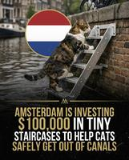
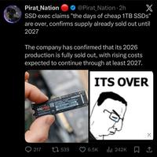

0
Snap has settled a social media addiction lawsuit just days before trial, while Meta, TikTok, and Alphabet remain defendants and are headed to court. "Terms of the deal were not announced as it was revealed by lawyers at a California Superior Court hearing, after which Snap told the BBC the parties were 'pleased to have been able to resolve this matter in an amicable manner.'" From the report: The plaintiff, a 19-year old woman identified by the initials K.G.M., alleged that the algorithmic design of the platforms left her addicted and affected her mental health. In the absence of a settlement with the other parties, the trial is scheduled to go forward against the remaining three defendants, with jury selection due to begin on January 27. Meta boss Mark Zuckerberg is expected to testify, and until Tuesday's settlement, Snap CEO Evan Spiegel was also set to take the stand.
Snap is still a defendant in other social media addiction cases that have been consolidated in the court. The closely watched cases could challenge a legal theory that social media companies have used to shield themselves. They have long argued that Section 230 of the Communications Decency Act of 1996 protects them from liability for what third parties post on their platforms. But plaintiffs argue that the platforms are designed in a way that leaves users addicted through choices that affect their algorithms and notifications. The social media companies have said the plaintiffs' evidence falls short of proving that they are responsible for alleged harms such as depression and eating disorders.
Read more of this story at Slashdot.
alternative_right shares a report from ScienceAlert: Thanks to a giant eruption on the Sun and a large opening in its atmosphere, we're currently experiencing G4 conditions -- a severe geomagnetic storm strong enough to disrupt power grids as energy from space weather disturbances drives electric currents through Earth's magnetic field and the ground. Experts say the storm could even reach G5 levels, the extreme category responsible for the spectacular auroral activity seen in May 2024. In fact, space weather bureaus around the world are forecasting powerful aurora conditions, with some suggesting aurora could be visible at unusually low latitudes, potentially rivaling the reach of 2024's historic superstorm. A livestream of the Northern Lights is available on YouTube. The Aurora forecast is available here.
Read more of this story at Slashdot.
An anonymous reader quotes a report from the Guardian: The world has entered an era of "global water bankruptcy" that is harming billions of people, a UN report has declared. The overuse and pollution of water must be tackled urgently, the report's lead author said, because no one knew when the whole system could collapse, with implications for peace and social cohesion. All life depends on water but the report found many societies had long been using water faster than it could be replenished annually in rivers and soils, as well as over-exploiting or destroying long-term stores of water in aquifers and wetlands. This had led to water bankruptcy, the report said, with many human water systems past the point at which they could be restored to former levels. The climate crisis was exacerbating the problem by melting glaciers, which store water, and causing whiplashes between extremely dry and wet weather.
Prof Kaveh Madani, who led the report, said while not every basin and country was water bankrupt, the world was interconnected by trade and migration, and enough critical systems had crossed this threshold to fundamentally alter global water risk. The result was a world in which 75% of people lived in countries classified as water-insecure or critically water-insecure and 2 billion people lived on ground that is sinking as groundwater aquifers collapse. Conflicts over water had risen sharply since 2010, the report said, while major rivers, such as the Colorado, in the US, and the Murray-Darling system, in Australia, were failing to reach the sea, and "day zero" emergencies -- when cities run out of water, such as in Chennai, India -- were escalating. Half of the world's large lakes had shrunk since the early 1990s, the report noted. Even damp nations, such as the UK, were at risk because of reliance on imports of water-dependent food and other products. "This report tells an uncomfortable truth: many critical water systems are already bankrupt," said Madani, of the UN University's Institute for Water, Environment and Health. "It's extremely urgent [because] no one knows exactly when the whole system would collapse."
About 70% of fresh water taken by human withdrawals was used for agriculture, but Madani said: "Millions of farmers are trying to grow more food from shrinking, polluted or disappearing water sources. Water bankruptcy in India or Pakistan, for example, also means an impact on rice exports to a lot of places around the world." More than half of global food was grown in areas where water storage was declining or unstable, the report said. Madani said action to deal with water bankruptcy offered a chance to bring countries together in an increasingly fragmented world. "Water is a strategic, untapped opportunity to the world to create unity within and between nations. It is one of the very rare topics that left and right and north and south all agree on its importance." The UN report, which is based on a forthcoming paper in the peer-reviewed journal Water Resources Management, sets out how population growth, urbanization and economic growth have increased water demand for agriculture, industry, energy and cities. "These pressures have produced a global pattern that is now unmistakable," it said.
Read more of this story at Slashdot.
Ancient Slashdot reader jantangring shares a report from Swedish electronics industry news site Elektroniktidningen (translated to English), writing: "Open source code library cURL is removing the possibility to earn money by reporting bugs, hoping that this will reduce the volume of AI slop reports," reports etn.se. "Joshua Rogers -- AI wielding bug hunter of fame -- thinks it's a great idea." cURL maintainer Daniel Stenberg famously reported on the flood AI-generated bad bug reports last year -- "Death by a thousand slops." Now, cURL is removing the bounty payouts as of the end of January.
"We have to try to brake the flood in order not to drown," says cURL maintainer Daniel Stenberg [...]. "Despite being an AI wielding bug hunter himself, Joshua Rogers -- slasher of a hundred bugs -- thinks removing the bounty money is an excellent idea. [...] I think it's a good move and worth a bigger consideration by others. It's ridiculous that it went on for so long to be honest, and I personally would have pulled the plug long ago," he says to etn.se.
Read more of this story at Slashdot.
According to the Wall Street Journal, OpenAI and ServiceNow signed a three-year deal to embed AI agents directly into ServiceNow's enterprise workflows. CNBC reports: As part of the deal, ServiceNow will integrate GPT-5.2 into its enterprise workflow platform and create AI voice technology harnessing these models. "Bringing together our engineering teams and our respective technologies will drive faster value for customers and more intuitive ways of working with AI," said Amit Zavery, president, chief operating officer, and chief product officer at ServiceNow.
Read more of this story at Slashdot.
This week, Google finally shut down the official Stadia Bluetooth conversion tool... but there's no need to panic! Developer Christopher Klay preserved a copy on his personal GitHub and is hosting a fully working version of the tool on a dedicated website to make it even easier to find. The Verge's Sean Hollister reports: I haven't tried Klay's mirror, as both of my gamepads are already converted, but here's my video on how easy the process is. It's worth doing now that the pads work relatively well with Steam! I maintain that while Google made a lot of mistakes, it's an amazing example of shutting down a service the right way.
Read more of this story at Slashdot.
The UK government has launched a public consultation on whether to ban social media use for children under 16, drawing inspiration from Australia's recently enacted age-based restrictions. "It would also explore how to enforce that limit, how to limit tech companies from being able to access children's data and how to limit 'infinite scrolling,' as well as access to addictive online tools," reports Engadget. "In addition to seeking feedback from parents and young people themselves, the country's ministers are going to visit Australia to see the effects of the country's social media ban for kids, according to Financial Times."
Read more of this story at Slashdot.
A PwC survey of more than 4,500 CEOs found that over half report no revenue growth or cost savings from their AI investments so far, despite massive spending. Of the 4,454 business leaders surveyed, only 12% saw both lower costs and higher revenue, while 56% saw neither benefit. "26% saw reduced costs, but nearly as many experienced cost increases," adds The Register. From the report: AI adoption remains limited. Even in top use cases like demand generation (22 percent), support services (20 percent), and product development (19 percent), only a minority are deploying AI extensively. Last year, a separate PwC study found that only 14 percent of workers indicated they were using generative AI daily in their work. Despite the CEOs' repsonses, PwC concludes more investment is required. It claims that "isolated, tactical AI projects" often don't deliver measurable value, and that tangible returns instead come from enterprise-wide deployments consistent with business strategy. [...]
In terms of the broader picture, PwC says it found CEO confidence has hit a five-year low, with only 30 percent optimistic about revenue growth (down from 38 percent last year). This points to growing geopolitical risk and intensifying cyber threats, as well as uncertainty over the benefits and downsides of AI. Unsurprisingly, concern remains over tariffs as the Trump administration continues its erratic approach to policy, with almost a third of company chiefs saying tariffs are expected to reduce their company's profit margin in the year ahead. In the U.S., 22 percent indicate their corporation is highly or extremely exposed to tariffs. PwC warns that companies avoiding major investments due to geopolitical uncertainty underperform peers by two percentage points in growth and three points in profit margins.
Read more of this story at Slashdot.
AI will displace so many jobs that it will eliminate the need for mass immigration, according to Palantir CEO Alex Karp. Bloomberg: "There will be more than enough jobs for the citizens of your nation, especially those with vocational training," said Karp, speaking at a World Economic Forum panel in Davos, Switzerland on Tuesday. "I do think these trends really do make it hard to imagine why we should have large-scale immigration unless you have a very specialized skill."
Karp, who holds a PhD in philosophy, used himself as an example of the type of "elite" white-collar worker most at risk of disruption. Vocational workers will be more valuable "if not irreplaceable," he said, criticizing the idea that higher education is the ultimate benchmark of a person's talents and employability.
Read more of this story at Slashdot.
An anonymous reader quotes a report from U.S. News & World Report: U.S. health officials plan a new study investigating whether radiation from cellphones may affect human health. A spokesperson for the U.S. Department of Health and Human Services (HHS) said the research will examine electromagnetic radiation and possible gaps in current science. The initiative stems from numerous concerns raised by Health Secretary Robert F. Kennedy Jr., who has linked cellphone use to neurological damage and cancer.
"The [U.S. Food and Drug Administration] removed webpages with old conclusions about cell phone radiation while HHS undertakes a study on electromagnetic radiation and health research to identify gaps in knowledge, including on new technologies, to ensure safety and efficacy," HHS spokesman Andrew Nixon said. He added that the study was directed in a strategy report from the president's Make America Healthy Again Commission.
Some webpages from the FDA and the U.S. Centers for Disease Control and Prevention say current research does not show clear harm from cellphone radiation. The National Cancer Institute, which is part of the National Institutes of Health, says that "evidence to date suggests that cellphone use does not cause brain or other kinds of cancer in humans.".
Read more of this story at Slashdot.
An anonymous reader quotes a report from TechCrunch: Meta's Oversight Board is tackling a case focused on Meta's ability to permanently disable user accounts. Permanent bans are a drastic action, locking people out of their profiles, memories, friend connections, and, in the case of creators and businesses, their ability to market and communicate with fans and customers. This is the first time in the organization's five-year history as an oversight body that permanent account bans have been a subject of the Oversight Board's focus, the organization notes.
The case being reviewed isn't exactly one of an everyday user. Instead, the case involves a high-profile Instagram user who repeatedly violated Meta's Community Standards by posting visual threats of violence against a female journalist, anti-gay slurs against politicians, content depicting a sex act, allegations of misconduct against minorities, and more. The account had not accumulated enough strikes to be automatically disabled, but Meta made the decision to permanently ban the account. The Board's materials didn't name the account in question, but its recommendations could impact others who post content that targets public figures with abuse, harassment, and threats, as well as users who have their accounts permanently banned without receiving transparent explanations.
Meta referred this specific case to the Board, which included five posts made in the year before the account was permanently disabled. The Board says it's looking for input about several key issues: how permanent bans can be processed fairly, the effectiveness of its current tools to protect public figures and journalists from repeated abuse and threats of violence, the challenges of identifying off-platform content, whether punitive measures effectively shape online behaviors, and best practices for transparent reporting on account enforcement decisions. [...] Whether the Oversight Board has any real sway to address issues on Meta's platform continues to be debated, of course. [...] After the Oversight Board issues its policy recommendations to Meta, the company has 60 days to respond. The Board is also soliciting public comments on this topic. The report notes that Meta's Oversight Board is able to overturn individual moderation decisions and offer recommendations, but largely sidelined from major policy shifts driven by Mark Zuckerberg.
Read more of this story at Slashdot.
More than half of companies haven't seen any financial benefit from their AI investments, according to PwC's latest Global CEO Survey [PDF], and yet the spending shows no signs of slowing down. Some 56% of the 4,454 chief executives surveyed across 95 countries said their companies have realized neither higher revenues nor lower costs from AI over the past year.
Only 12% reported getting both benefits -- and those rare winners tend to be the ones who built proper enterprise-wide foundations rather than chasing one-off projects. CEO confidence in near-term growth has taken a notable hit. Just 30% feel strongly optimistic about revenue growth over the next 12 months, down from 38% last year and nowhere near the 56% who felt that way in 2022.
Read more of this story at Slashdot.
MacPaw, the Ukraine-based developer, has announced that Setapp Mobile -- its alternative iOS app store for European Union users that launched in open beta in September 2024 -- will shut down on February 16, 2026, citing "still-evolving and complex business terms" for alternative marketplaces that don't fit its current business model.
Alternative iOS stores became possible under the Digital Markets Act but face challenges including Apple's controversial Core Technology Fee, which Epic Games CEO Tim Sweeney has called "ruinous for any hopes of a competing store getting a foothold."
Read more of this story at Slashdot.
An anonymous reader shares a report: Anthropic Chief Executive Dario Amodei predicted a future in which AI will spur significant economic growth -- but could lead to widespread unemployment and inequality. Amodei is both "excited and worried" about the impact of AI, he said in an interview at Davos Tuesday. "I don't think there's an awareness at all of what is coming here and the magnitude of it."
Anthropic is the developer of the popular chatbot Claude. Amodei said the government will need to play a role in navigating the massive displacement in jobs that could result from advances in AI. He said there could be a future with 5% to 10% GDP growth and 10% unemployment. "That's not a combination we've almost ever seen before," he said. "There's gonna need to be some role for government in the displacement that's this macroeconomically large."
Amodei painted a potential "nightmare" scenario that AI could bring to society if not properly checked, laying out a future in which 10 million people -- 7 million in Silicon Valley and the rest scattered elsewhere -- could "decouple" from the rest of society, enjoying as much as 50% GPD growth while others were left behind. "I think this is probably a time to worry less about disincentivizing growth and worry more about making sure that everyone gets a part of that growth," Amodei said. He noted that was "the opposite of the prevailing sentiment now," but the reality of technological change will force those ideas to change.
Read more of this story at Slashdot.
Signal Foundation president Meredith Whittaker warned that AI agents that autonomously carry out tasks pose a threat to encrypted messaging apps [non-paywalled source] because they require broad access to data stored across a device and can be hijacked if given root permissions.
Speaking at Davos on Tuesday, Whittaker said the deeper integration of AI agents into devices is "pretty perilous" for services like Signal. For an AI agent to act effectively on behalf of a user, it would need unilateral access to apps storing sensitive information such as credit card data and contacts, Whittaker said. The data that the agent stores in its context window is at greater risk of being compromised.
Whittaker called this "breaking the blood-brain barrier between the application and the operating system." "Our encryption no longer matters if all you have to do is hijack this context window," she said.
Read more of this story at Slashdot.
Globes : Israeli startup DataRails, which offers financial planning and analytics tools, raised a $70M Series C led by One Peak at an estimated $600M to $700M valuation — Datarails has developed a software for Excel users, which it claims, transforms the CFO's office.
Bloomberg : Chinese AI startup Zhipu says it is limiting GLM Coding Plan access after strong demand, taking only 20% of its current daily new subscriptions from January 23 — China's Zhipu is limiting access to its coding assistant after strong demand for a new AI model siphoned off computing resources.
Wen-Yee Lee / Reuters : GlobalWafers Chair Doris Hsu says the Taiwanese silicon wafer maker is preparing for phase two of its Texas plant, after unveiling plans to invest an extra $4B — Taiwanese silicon wafer manufacturer GlobalWafers (6488.TWO) is preparing for the phase two expansion of its plant in the U.S. state of Texas …
Coco Liu / Bloomberg : Berlin-based Cloover, which makes software to help install solar, home batteries, and heat pumps, raised $22M from Lowercarbon and others and $1.2B in debt — The new funding round comes as residential installations are declining across the bloc. — Berlin-based climate technology company Cloover …
Financial Times : How Ukraine and Russia both rely on the same Chinese drone suppliers, whose tech is vital to the war; China officially bans sensitive drone tech exports to both — As both sides scramble to source vital parts, some experts are convinced Russian buyers are being favoured by Beijing
Francesca Maglione / Bloomberg : US colleges like Virginia Tech and Georgia Tech are using AI to streamline admissions; Virginia Tech says AI that scores essay questions saved ~8,000 hours — Some schools have even used AI to guard against AI. — Thousands of students will get their college decisions faster this year because of artificial intelligence.
The Information : Sources: OpenAI begins offering its chatbot ads to dozens of advertisers, initially charging per ad view, not per ad click, and asks them for <$1M commitments — OpenAI has started offering its new chatbot ads to dozens of advertisers, according to two people familiar with the matter.
Cheng Ting-Fang / Nikkei Asia : As Taiwanese chipmakers push localization to secure supply chains, suppliers to the steel, plastics, and display industries are moving into Taiwan's chip sector — TAINAN, Taiwan — A surprising cast of companies, including suppliers to the steel, plastics and display industries and even a maker …
Simon P. Couch : A programmer estimates his typical day of coding with Claude Code is equivalent to running the dishwasher an extra time, much more energy than a “median query” — Most of the discourse about the environmental impact of LLM use focuses on a ‘median query.’ What about a Claude Code session?
Nikou Asgari / Financial Times : Galaxy Digital plans to launch a hedge fund in Q1 2026 investing up to 30% in crypto tokens and the rest in financial stocks; sources say it has raised $100M — Billionaire's firm plans portfolio to profit from rising and falling prices, following sharp sell-off in digital assets sector
Jagmeet Singh / TechCrunch : Bengaluru-based Amagi, an ad tools provider for broadcast and streaming TV, fell below its listing price in its India market debut after raising $196M in an IPO — Amagi Media Labs, a Bengaluru-headquartered company that sells cloud software used to run and monetize TV and streaming channels …
Financial Times : Thoma Bravo co-founder Orlando Bravo says the slump in software company valuations over threat of AI-driven disruption is creating a “huge buying opportunity” — Firm's co-founder Orlando Bravo tells FT that sector sell-off is creating a ‘huge buying opportunity’
Nami Matsuura / Nikkei Asia : Payments using facial recognition are growing in South Korea as the tech improves; South Korean fintech app Toss has scaled its “Facepay” service to 1M+ users — SEOUL — Payments using facial recognition are becoming more widespread in cashless South Korea, as artificial intelligence and 3D photography increase accuracy.
Financial Times : The Gates Foundation and OpenAI plan to invest $50M to use AI to ease the impact of chronic staff shortages in 1,000 primary health clinics in Africa by 2028 — Gates Foundation partners with tech group to ease impact of chronic staff shortages in Rwanda and other countries
Isaiah Poritz / Bloomberg Law : Apple wins dismissal of parts of a class action alleging it violated CA privacy law by collecting user data from its apps despite users believing they opted out — Apple Inc. defeated claims that it violated California privacy law when it allegedly collected user data from its in-house apps …